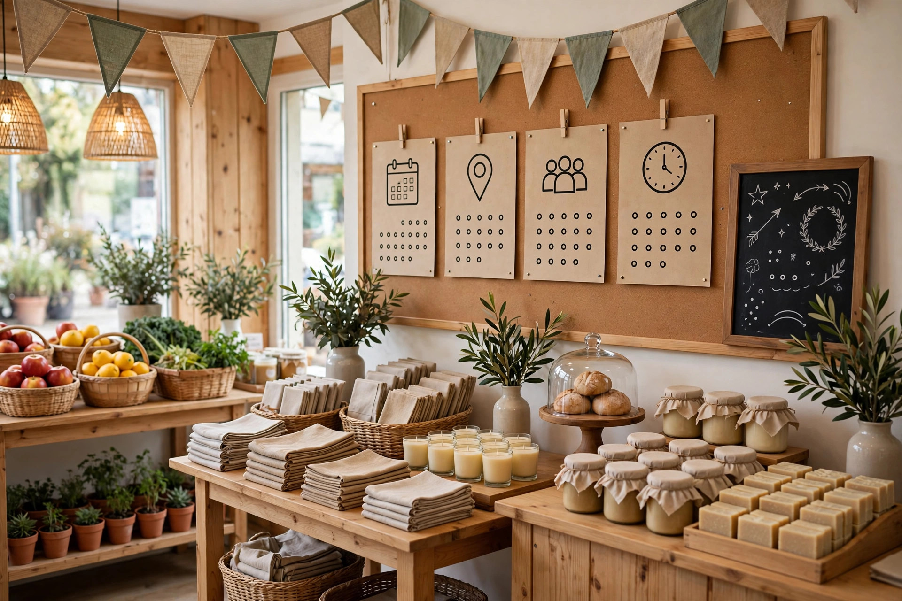

Start With a Simple Yearly Calendar
A yearly calendar is the foundation of seasonal content planning. Write down the seasons, school holidays, local events, festivals and busy periods that affect your customers, and note what changes in each period. For example, weather may change how customers travel, a festival may change shopping habits, and a holiday period may change when people are available. This calendar does not need to be detailed at first; a single page with the main dates and a short note for each is enough to start. Keep the calendar visible in the workplace so seasonal ideas are not forgotten until too late.
Once the calendar exists, look for the customer questions that belong to each period. What do people ask before winter, before a festival, or at the start of a school term? Write one or two questions beside each date, based on what you have actually heard from customers. These questions become the topics for your content, and they keep the plan grounded in real needs rather than in ideas that sound seasonal but do not help anyone.
Choose One Clear Topic per Moment
It is tempting to cover every seasonal idea at once, but a single clear topic per moment works better. Choose the question that matters most for that season or event, and build one helpful page or post around it. Explain what customers should know, what steps they can take, and what they should prepare or check. A focused piece is easier to write, easier to read, and easier to find later than a long article that tries to cover a whole season. If two topics feel equally important, publish the one customers asked about most recently first.
Focusing on one topic also makes planning easier across the year. If each season has one or two strong topics, the business will have a steady set of useful pages without needing to invent ideas each week. Keep a list of topics you have already covered, so you do not repeat the same angle next year without adding something new. When a topic is revisited, update it with fresh advice, new questions customers have asked, or a clearer explanation.
Write Ahead, But Keep It Practical
Writing seasonal content ahead of time reduces stress and improves quality. When a season is still a few weeks away, there is time to think clearly, check facts and write in simple language. Aim to finish a piece before the season begins, so customers can find it when they start searching and planning. Publishing too late means the content misses the moment when it would have been most useful, even if the advice itself is good. A short checklist for each piece, covering facts, wording and next steps, keeps quality steady.
Practical writing matters more than perfect writing. Use short paragraphs, clear headings and everyday words, and end with a simple next step, such as calling for advice or visiting during opening hours. Avoid vague seasonal claims and stick to what the business actually offers. A practical piece that answers one real question will help customers more than a long, polished piece that says little about their actual situation.

Match Content to the Customer's Timing
Customers look for seasonal information at different times. Some plan early and search weeks before an event, while others search at the last moment when a need becomes urgent. A good plan serves both groups by publishing early content for planners and keeping basic information easy to find for last-minute customers. For example, an early guide can explain preparation steps, while the business profile and main pages should always carry current hours and contact details. Note the publish date on each piece so outdated seasonal advice is easy to spot later.
Timing also applies to how long a piece stays useful. Some seasonal content is only relevant for a short period, while other content, such as general preparation advice, can be updated and reused next year. When publishing, note whether a piece is short-lived or long-lasting, and plan to review it after the season ends. Removing or updating outdated seasonal content keeps the website trustworthy, because customers should not find last season's advice presented as current information.
Use Local Events Without Exaggeration
Local events can be a good source of content, but they should be handled honestly. Write about an event only if it is relevant to your customers and your business, and describe it in general, accurate terms. Explain how the event may affect timings, availability or services, and give practical advice for customers who are planning around it. Do not claim a connection to an event that does not exist, and do not use an event simply as an excuse to promote unrelated services. When in doubt about an event detail, check it with a local source before publishing anything.
Local content also works best when it respects the community it describes. Mention the area and the event naturally, in the context of helpful advice, rather than repeating place names or event names unnaturally. Customers can tell when content is written for them and when it is written only to attract attention. A helpful, respectful piece about a local event builds goodwill, while an exaggerated piece can damage trust, especially in a close community where people know what is true.
Review, Update and Reuse What Works
After a season or event passes, take a short time to review what worked. Which pieces did customers ask about? Which questions came up that the content did not answer? Which pieces are still accurate and could be updated for next year? This review turns seasonal content from a one-time effort into a growing resource, because each year the plan becomes clearer and the topics become better matched to real questions. This yearly review also helps the business avoid repeating the same topic without new value.
Keep a simple record of each seasonal piece, its topic and the date it was published, so future planning does not repeat old angles unknowingly. When a topic is reused, add something genuinely new: a clearer step, an answer to a new question, or updated practical advice. Steady seasonal planning, reviewed each year, helps a small business stay visible and helpful through every season, without rushing, repeating itself or making promises it cannot keep.
Frequently Asked Questions
How far ahead should seasonal content be planned?
Plan a few weeks ahead, so content is ready before customers start searching and planning for that season or event.
Should every season have many content pieces?
No, one or two clear, helpful topics per season are better than many rushed pieces that repeat the same general advice.
What should a business do with seasonal content after the season ends?
Review it, update it for next year if it is still useful, or remove it if it is out of date and could mislead customers.
How can Zaheer Seo Expert help with content planning?
Zaheer Seo Expert, based in Layyah, can help a business plan and present seasonal content clearly online so customers find timely, useful answers.
Want More Customers From Google?
Call 0327 7350830 or email seozaheer14@gmail.com. Zaheer Seo Expert, Layyah - Rajan Shah Road, Rana Nagar, Chak 116 TDA, Pakistan. Open 24 hours.
Get Your SEO Strategy →